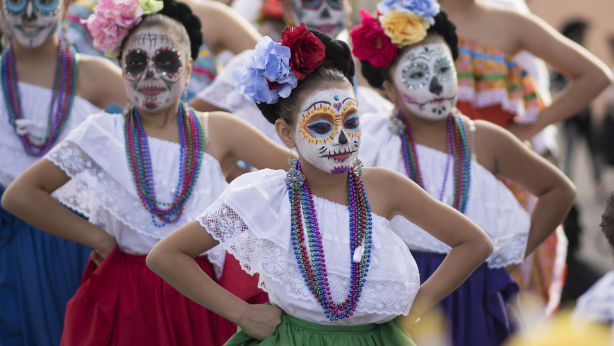
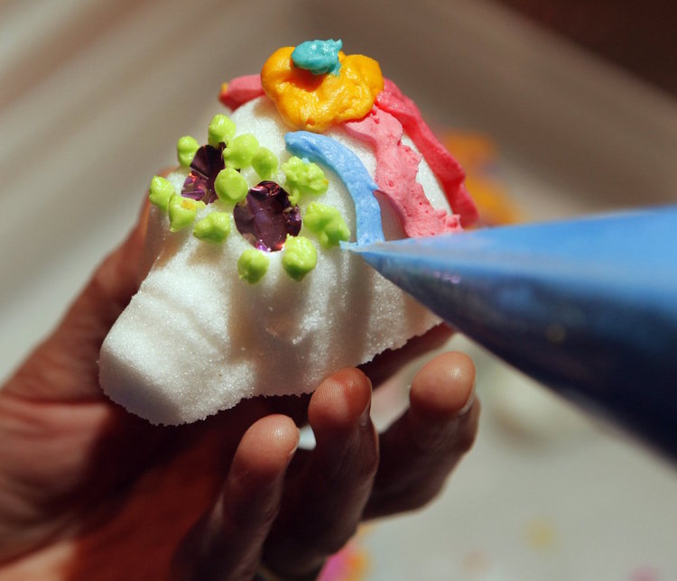

In the U.S., Day of the Dead is becoming big business
Chucho Rodriguez works his fingers to the bone around this time of year. His business as a tattoo artist in Lockport, Illinois, always picks up in October, because customers want skulls. Lots of skulls.
Lately, though, people are forgoing tattoos of the kinds of skulls associated with pirates, haunting and Halloween. Instead, they ask for tattoos of decorated sugar skulls adorned with flowers.
That's because of growing interest in the Day of the Dead — or Dia de los Muertos — the Mexican holiday that celebrates the lives of deceased friends and family. These distinctive sugar skulls play a prominent role in the celebration.
Image 2. Tracy Burke applies colorful frostings to candy skulls at El Rayo Taqueria in Portland, Oregon. Photo: Gregory Rec/Portland Press Herald via Getty Images [click to expand]
"The skull with all of the decorations, you can almost consider it to be pop culture now," said Rodriguez, a Mexican immigrant who has created murals and sculptures throughout the Midwest.
Altars To Deceased Loved Ones
The holiday is celebrated in the United States from October 31 to November 2. Its tradition calls for the creation of altars to deceased loved ones, decorated with photos, meaningful objects and their favorite foods said to attract their souls.
Tradition also calls for petals of bright yellow-orange marigold flowers to guide them from the cemetery.In the past few years, companies have made it easier to get into the spirit of the holiday, selling Dia de los Muertos-themed apparel and home decor.
With 57 million Hispanics in the United States alone, this demographic represents almost 18 percent of the country's population and significant spending power, says Nielsen, a data analytics company. Nielsen expects this group's buying power to grow from $1.4 trillion in 2016 to $1.8 trillion by 2021.

Newsela